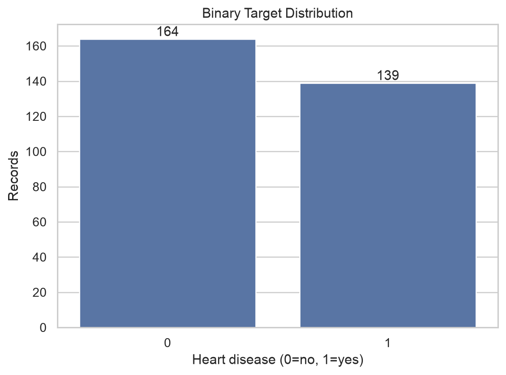
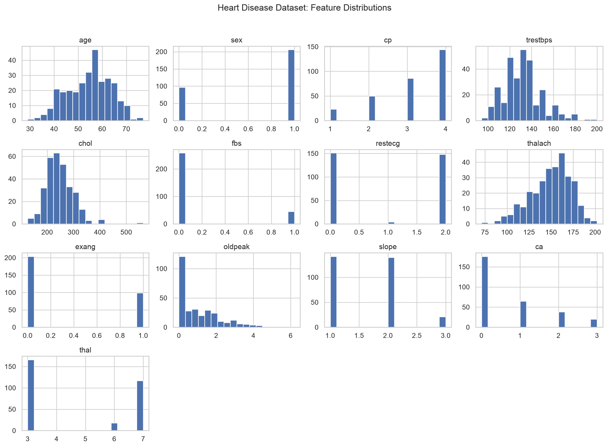
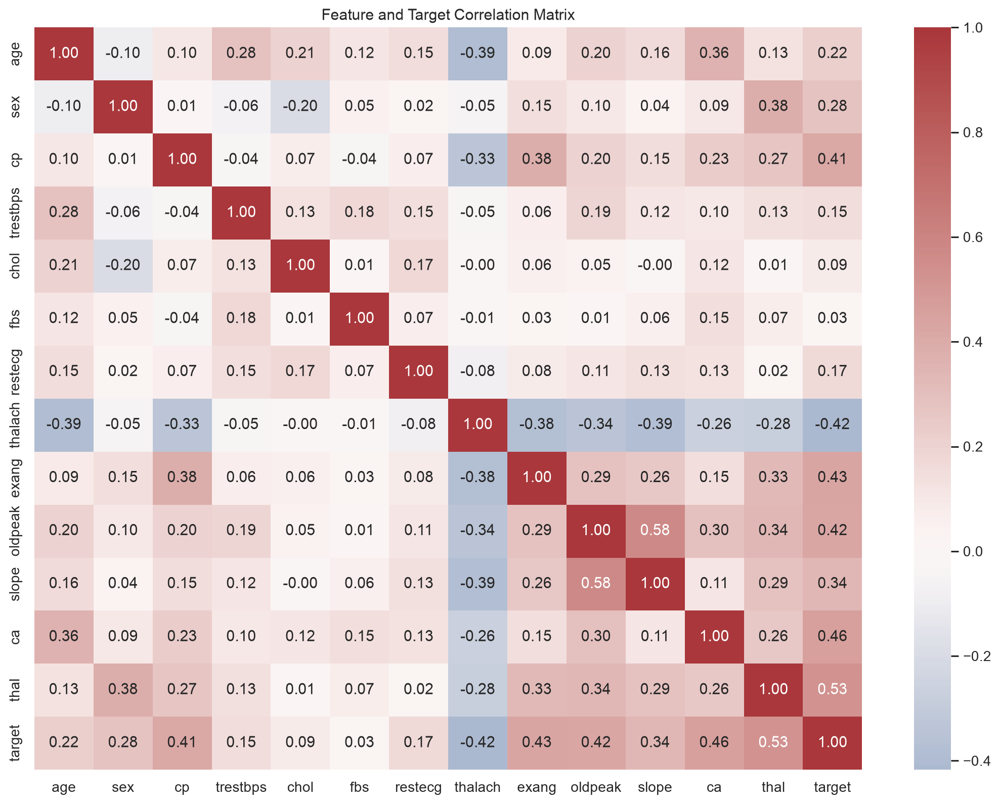
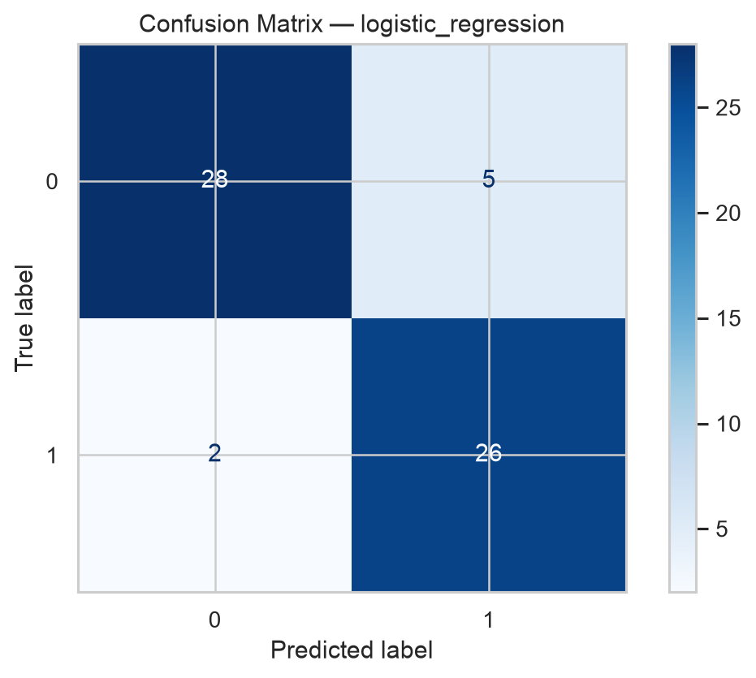
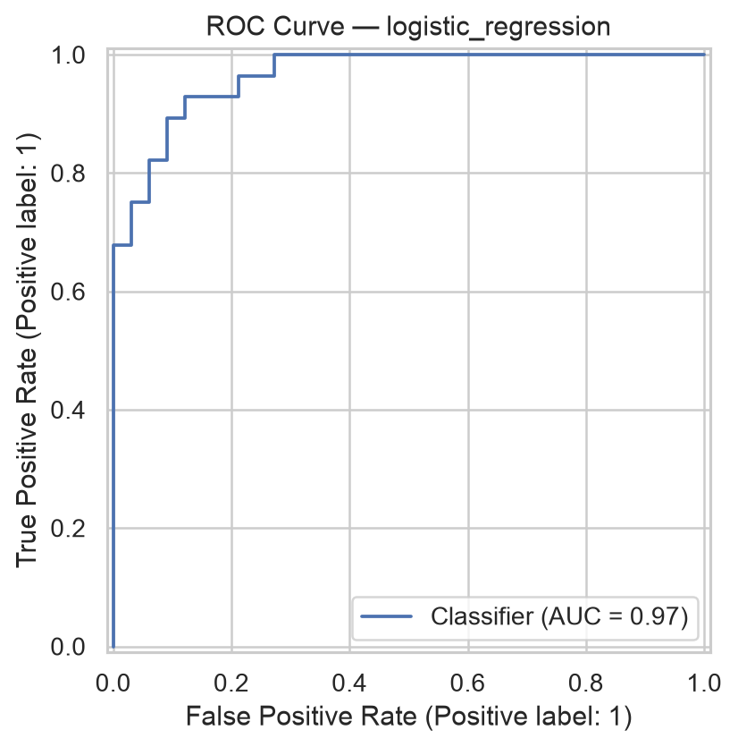
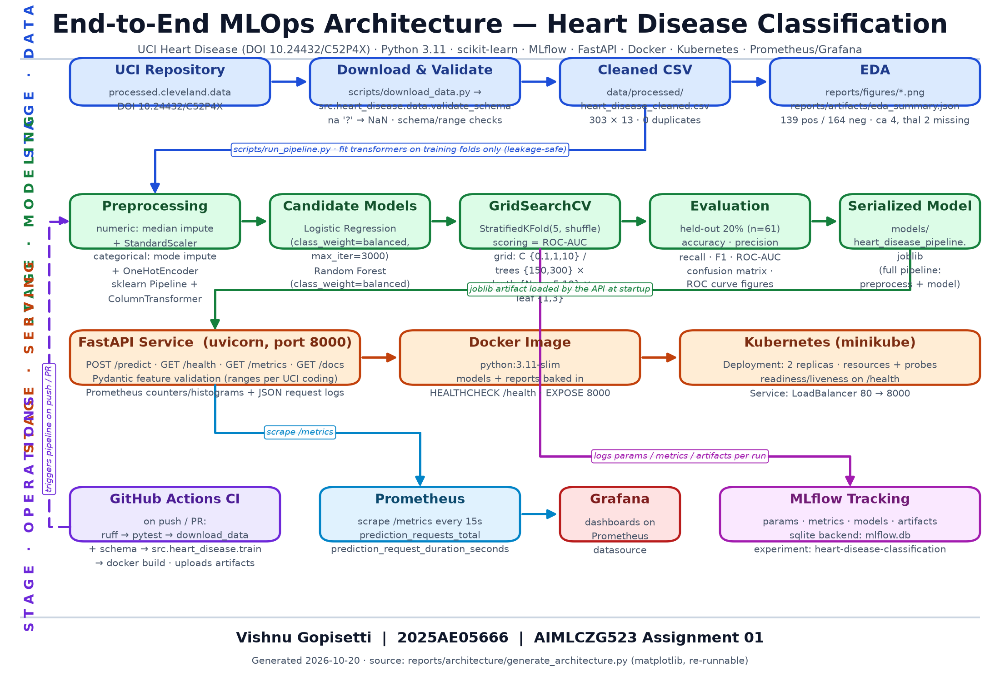

reports/artifacts/*.json, run_logs/, screenshots/);
items not yet executed are marked as pending rather than claimed.
Student: Vishnu Gopisetti — ID 2025AE05666 Course: AIMLCZG523 (MLOps) — Assignment 01 (50 marks) Date: 2026-10-20 Dataset: UCI Heart Disease (Cleveland subset), DOI 10.24432/C52P4X
Health disclaimer. This project is an educational MLOps exercise. The model, API, and all outputs are not a medical device and must not be used for diagnosis or any clinical decision. Every API response carries an explicit disclaimer to this effect.
Evidence policy. Every number in this report is traceable to a generated artifact under
reports/artifacts/or a run log underrun_logs/. Steps that are configured but not yet executed are marked explicitly (e.g., GitHub Actions cloud run, Kubernetes rollout); no success is claimed without evidence. A machine-readable companion lives inresults_summary.json.
This assignment builds a complete, reproducible MLOps pipeline around the UCI Heart Disease dataset: automated download and validation of the raw Cleveland data (303 rows, 13 features), leakage-safe preprocessing inside a single scikit-learn Pipeline, model comparison between logistic regression and random forest with 5-fold cross-validated grid search, experiment tracking in MLflow (SQLite backend), a FastAPI inference service with Prometheus metrics and structured JSON logs, Docker packaging, a Kubernetes (minikube) deployment design, and a GitHub Actions CI workflow.
On the held-out 20% split (n = 61), the selected logistic regression model (C = 0.1) reaches accuracy 0.8852, precision 0.8387, recall 0.9286, F1 0.8814, ROC-AUC 0.9654, with cross-validated ROC-AUC 0.9025 ± 0.0148. The tuned random forest is close (ROC-AUC 0.9535; CV 0.8878 ± 0.0320) but loses on both held-out AUC and CV stability. The containerized API was exercised end-to-end over HTTP (verified via the host LAN IP after a local port-8000 conflict) and returns calibrated probabilities with a hard-coded educational disclaimer. The GitHub Actions cloud run passed on the pushed repository (2 m 23 s, all steps green) and the Kubernetes rollout was verified on minikube — see Sections 7 and 9; the repository URL is in the Repository URL section.
processed.cleveland.data file, validate schema/ranges, normalize the 5-level num target to binary, and persist a cleaned CSV.ColumnTransformer pipeline fitted only on training folds; compare two model families under identical CV; tune with GridSearchCV scored by ROC-AUC./health, and Prometheus /metrics; ship a JSON request log line per prediction.Source. The pipeline downloads processed.cleveland.data directly from the UCI repository (src/data_processing.py), parsing ? cells as missing. The binary target follows the standard convention recorded in reports/artifacts/eda_summary.json:
num == 0 -> target 0 (no disease)
num in {1,2,3,4}-> target 1 (disease present)
Verified summary (from reports/artifacts/eda_summary.json, regenerated by make eda):
| Property | Value |
|---|---|
| Rows | 303 |
| Features | 13 (+ target) |
| Positive class (disease) | 139 |
| Negative class (no disease) | 164 |
| Duplicates after cleaning | 0 |
Missing: ca |
4 |
Missing: thal |
2 |
| Missing: all other columns | 0 |
The class split is mildly imbalanced (45.9% positive / 54.1% negative) — close enough for stable metrics but worth remembering when reading accuracy. The ca (number of major vessels, 0–3) and thal (thalassemia category, 3/6/7) columns are the only ones with missing cells; both are treated as categorical features, so they receive mode imputation inside the pipeline (Section 3). No rows are dropped for missingness — only impossible-target rows and exact duplicates are removed, and there were none (0 duplicates).
EDA figures (generated to reports/figures/, embedded below):

Figure 1 — Binary target distribution: 139 positive vs 164 negative records.

Figure 2 — Feature distributions across all 13 clinical attributes.

Figure 3 — Pearson correlation matrix. cp, thal, ca, oldpeak, and exang carry the strongest positive association with the target; thalach correlates negatively.
The cleaned dataset is written to data/processed/heart_disease_cleaned.csv (303 rows) and consumed unchanged by training and tests.
Feature inventory. The 13 clinical attributes, their preprocessing branch (Section 3), and the serving-time validation ranges enforced by the API’s Pydantic schema (src/api.py):
| # | Feature | Branch | Description (UCI coding) | API range |
|---|---|---|---|---|
| 1 | age |
numeric | Age in years | 1–120 |
| 2 | sex |
categorical | 1 = male, 0 = female | 0–1 |
| 3 | cp |
categorical | Chest pain type 1–4 | 1–4 |
| 4 | trestbps |
numeric | Resting blood pressure (mm Hg) | 40–300 |
| 5 | chol |
numeric | Serum cholesterol (mg/dl) | 50–800 |
| 6 | fbs |
categorical | Fasting blood sugar > 120 mg/dl (1/0) | 0–1 |
| 7 | restecg |
categorical | Resting ECG results 0–2 | 0–2 |
| 8 | thalach |
numeric | Maximum heart rate achieved | 30–250 |
| 9 | exang |
categorical | Exercise-induced angina (1/0) | 0–1 |
| 10 | oldpeak |
numeric | ST depression induced by exercise | −5–15 |
| 11 | slope |
categorical | Slope of peak exercise ST segment 1–3 | 1–3 |
| 12 | ca |
categorical | Major vessels colored by fluoroscopy 0–3 | 0–3 |
| 13 | thal |
categorical | Thalassemia category 3 = normal, 6 = fixed defect, 7 = reversible | 3–7 |
The same ranges double as a data-quality contract: a payload outside them is rejected with HTTP 422 before it can reach the model, which keeps malformed input out of the Prometheus success counters and the request logs.
Pipeline design (build_preprocessor() in src/data_processing.py):
| Branch | Columns | Steps |
|---|---|---|
numeric |
age, trestbps, chol, thalach, oldpeak |
SimpleImputer(strategy="median") → StandardScaler |
categorical |
sex, cp, fbs, restecg, exang, slope, ca, thal |
SimpleImputer(strategy="most_frequent") → OneHotEncoder(handle_unknown="ignore", sparse_output=False) |
Both branches are combined in a ColumnTransformer and then wrapped, together with the estimator, in a single sklearn.pipeline.Pipeline. This design gives three guarantees:
GridSearchCV/cross_validate fold refits it on that fold’s training portion alone. Nothing is fitted on the full dataset before splitting.handle_unknown="ignore" means unseen categorical levels at inference time produce an all-zero block rather than an exception.A dedicated unit test (tests/test_preprocessing.py) feeds the preprocessor a frame containing a NaN and asserts the output has no missing values and expands to more columns than the input (one-hot effect).
The transformer configuration is deliberately conservative: remainder="drop" guarantees no column leaks into the feature matrix by accident, verbose_feature_names_out=False keeps transformed column names readable for debugging, and the numeric branch runs imputation before scaling so a missing chol never poisons the scaler’s statistics. oldpeak is treated as numeric (a continuous ST-depression measurement), while ca and thal — despite being stored as numbers — go through the categorical branch because their values are ordinal codes, not quantities; median-imputing a mode-like code such as thal = 3 would manufacture a meaningless value.
Protocol (src/train.py, seeded with RANDOM_STATE = 42 everywhere):
StratifiedKFold(5, shuffle, random_state=42) on the training portion.class_weight="balanced", max_iter=3000), grid C ∈ {0.1, 1.0, 10.0}.class_weight="balanced", fixed seed), grid n_estimators ∈ {150, 300} × max_depth ∈ {None, 5, 10} × min_samples_leaf ∈ {1, 3} (12 combinations).GridSearchCV selects hyperparameters by ROC-AUC; a separate cross_validate pass records mean/std for all five metrics per family.Held-out test results (verbatim from reports/artifacts/comparison.json, n = 61):
| Model | Best params | Accuracy | Precision | Recall | F1 | ROC-AUC | CV ROC-AUC (mean ± std) |
|---|---|---|---|---|---|---|---|
| Logistic regression | model__C = 0.1 |
0.8852 | 0.8387 | 0.9286 | 0.8814 | 0.9654 | 0.9025 ± 0.0148 |
| Random forest | n_estimators=150, max_depth=5, min_samples_leaf=3 |
0.8689 | 0.8125 | 0.9286 | 0.8667 | 0.9535 | 0.8878 ± 0.0320 |
(Exact values: LR accuracy 0.8852459016393442, precision 0.8387096774193549, recall 0.9285714285714286, F1 0.8813559322033898, ROC-AUC 0.9653679653679654, CV 0.9024779568257829 ± 0.014803685378876278; RF accuracy 0.8688524590163934, precision 0.8125, recall 0.9285714285714286, F1 0.8666666666666667, ROC-AUC 0.9534632034632035, CV 0.8878171345562651 ± 0.03203914942730474.)
Selection. Logistic regression is selected and serialized to models/heart_disease_pipeline.joblib (4.9 KB — the entire trainable pipeline). Rationale: it wins on held-out ROC-AUC (0.9654 vs 0.9535), on CV ROC-AUC mean (0.9025 vs 0.8878), and its CV std is less than half the forest’s (0.0148 vs 0.0320) — the regularized linear model is both better and more stable on this 303-row dataset, which is the expected outcome on a small, mostly linearly separable clinical feature set. Both models tie on recall (0.9286).

Figure 4 — Confusion matrix of the selected logistic regression on the 61-row test set (54/61 correct; 1 false negative, 6 false positives).

Figure 5 — ROC curve of the selected model, AUC = 0.9654.
Selection caveat (honest): the test set is used once for the model-family decision in this teaching task, and with only 61 test rows the 0.0119 AUC gap between the models is within plausible sampling noise — for strict unbiased final estimation a second untouched holdout should be reserved, and the lower CV variance (not the single test number) is the more trustworthy signal behind the choice. This caveat is also recorded in the code (src/train.py) and the model card (reports/artifacts/model_card.json).
mlflow.db at the project root (mlflow ui --backend-store-uri sqlite:///mlflow.db), with the file-store mlruns/ holding artifacts.heart-disease-classification; one MLflow run per candidate model family.model_family, test_size=0.20, random_state=42, cv_folds=5, best hyperparameters), CV metrics (cv_accuracy/precision/recall/f1/roc_auc mean and std), held-out metrics (the five test metrics in Section 4), the serialized model (mlflow.sklearn.log_model, with the MLflow 3.x skops trust declaration for numpy.dtype and sklearn.tree._tree.Tree), and the per-model classification_report JSON artifact.This makes every number in Section 4 replayable: launching mlflow ui and opening the experiment shows both runs side by side with the exact metrics above (screenshot screenshots/02_mlflow.png).
Because the tracked model is the whole pipeline (preprocessor + estimator), the MLflow copy is loadable and servable without reconstructing any training code — mlruns/1/models/ carries the MLmodel, conda.yaml, python_env.yaml, and requirements.txt sidecars for each registered version. Metric names follow a fixed convention (cv_<metric>_mean, cv_<metric>_std from the cross-validate pass, bare <metric> for the held-out test set), so the two candidates can be compared in the UI with a single filter, and the classification-report artifacts give per-class precision/recall alongside the aggregate scores.
| Mechanism | Detail |
|---|---|
| Determinism | RANDOM_STATE = 42 for split, CV folds, and both estimators; StratifiedKFold(shuffle=True) is seeded |
| Single artifact | Full pipeline (preprocessing + model) serialized via joblib to models/heart_disease_pipeline.joblib |
| Model card | reports/artifacts/model_card.json — feature order, target definition, metrics, best params, explicit limitations |
| Environment | requirements.txt with bounded ranges (e.g., scikit-learn>=1.4,<2.0, mlflow>=2.12,<4.0); exact venv versions in results_summary.json |
| Structured outputs | Every stage writes JSON artifacts (eda_summary.json, comparison.json, training_summary.json, per-model classification reports) — no numbers live only in stdout |
| Logs | All execution evidence preserved under run_logs/ (train, eda, pytest, ruff, docker, api) |
The architecture diagram is itself regenerated from source (reports/architecture/generate_architecture.py, matplotlib only), keeping the report’s figures as reproducible as the model’s.
Test suite. pytest currently collects 40 tests, all passing (evidence: run_logs/pytest_v2.log, screenshots/03_tests.png):
The suite spans six files — conftest.py fixtures plus test_data.py (10 tests), test_preprocessing.py (5), test_model.py (10), test_api.py (10), test_monitoring.py (5) — covering dataset loading and schema validation, missing-value handling, preprocessing transforms and feature ordering, training on synthetic data, prediction outputs with confidence/probability invariants, serialization round-trips, API schema validation with 422/503 error handling, and Prometheus metric registration and increment behavior. All 40 pass in ~2 s with no network access.
STATUS: 40/40 passing (evidence: run_logs/pytest_v2.log, screenshots/03_tests.png).
Lint. ruff check src tests scripts → “All checks passed!” (run_logs/ruff_v2.log, screenshots/04_lint.png).
GitHub Actions (.github/workflows/ci-cd.yml), as configured — one job, on push/PR/manual dispatch, Python 3.11 with pip caching:
requirements.txt → 4. ruff check src tests scripts → 5. python scripts/download_data.py (download + schema validation) → 6. pytest -v (40 tests) → 7. python -m src.heart_disease.train (MLflow-tracked smoke retrain) → 8. docker build -t heart-disease-api:<sha> . → 9. Upload reports/, models/, mlruns/ as workflow artifacts (if: always()).STATUS: cloud run PASSED (2026-10-20). Run 39448863315 on kteja-av/mlops-heart-disease completed with conclusion success in 2 m 23 s — every step green: Checkout → Set up Python → Install dependencies → Lint → Download data and validate schema → Unit tests (40) → Smoke train (MLflow-tracked) → Build Docker image → Upload mlops-run-artifacts. Evidence: run_logs/github_actions_run.log (verbatim step table), screenshots/11_github_actions.png.
Service (src/heart_disease/api.py, FastAPI + uvicorn):
| Endpoint | Purpose |
|---|---|
POST /predict |
13 validated features (Pydantic ranges per UCI coding) → prediction, label, confidence, probability_heart_disease, disclaimer |
GET /health |
Liveness/readiness payload incl. model_available |
GET /metrics |
Prometheus exposition (Section 10) |
GET /docs |
OpenAPI UI |
GET / |
Service index linking the above |
Every prediction also emits one structured JSON log line (request-scoped, includes client, prediction, and duration in ms) and increments Prometheus counters/histograms.
Real executed exchange (Docker container, 2026-10-20; verbatim from run_logs/api_health.json and run_logs/api_predict.json):
Request — GET /health:
{"status":"ok","model_available":true}
Request — POST /predict with body:
{"age":55,"sex":1,"cp":2,"trestbps":130,"chol":240,"fbs":0,"restecg":1,
"thalach":150,"exang":0,"oldpeak":1.2,"slope":2,"ca":0,"thal":3}
Response — HTTP 200:
{"prediction":0,"label":"heart_disease_not_indicated","confidence":0.672567,
"probability_heart_disease":0.327433,
"disclaimer":"Educational output only; not a medical diagnosis."}
The matching server-side log line in run_logs/docker_container.log:
{"event": "prediction", "status": "success", "client": "172.17.0.1", "prediction": 0, "duration_ms": 735.23}
Dockerfile approach: python:3.11-slim base; requirements installed before source copy for layer caching; bakes in src/, the trained models/, and reports/artifacts/; built-in HEALTHCHECK curling /health; EXPOSE 8000; uvicorn entrypoint. docker-compose.yml mirrors the same service for one-command local runs.
Port-8000 note (honest): the host’s port 8000 was already occupied by an unrelated long-running development service, documented in run_logs/port8000_conflict.log. Rather than killing that service, all container verification used the host’s LAN interface — http://192.168.0.9:8000 — which reaches the published container port directly; the /health, /predict, and /metrics evidence above (and screenshots/06_api_health.png, 07_api_predict.png, 09_prometheus_metrics.png) was captured through that address.
Manifest design (deployment/kubernetes/ — namespace, deployment, service, configmap):
| Object | Settings |
|---|---|
Namespace |
heart-disease |
ConfigMap |
LOG_LEVEL=INFO, HOST/PORT, PYTHONUNBUFFERED=1, wired via envFrom |
Deployment |
heart-disease-api, 2 replicas, imagePullPolicy: IfNotPresent, container port 8000 |
| Probes | readiness /health (10 s initial, 10 s period); liveness /health (20 s initial, 20 s period) |
| Resources | requests 100 m CPU / 256 Mi; limits 500 m CPU / 512 Mi |
Service |
type LoadBalancer, port 80 → targetPort 8000, app selector |
(Cloud-cluster adaptations — registry push, image reference, ingress — are documented in deployment/cloud/README.md.)
Minikube procedure (executed 2026-10-20; see the status paragraph below):
python -m src.heart_disease.train # model artifact must exist before the image build
docker build -t heart-disease-api:latest .
minikube start --driver=docker
minikube image load heart-disease-api:latest
kubectl apply -f deployment/kubernetes/
kubectl -n heart-disease rollout status deployment/heart-disease-api
kubectl -n heart-disease get pods,svc
kubectl -n heart-disease port-forward svc/heart-disease-api 8080:80
On local minikube the LoadBalancer IP can stay <pending>; access is via minikube service or kubectl port-forward svc/heart-disease-api 8080:80.
STATUS: deployed and verified (2026-10-20). minikube start --driver=docker (minikube v1.39.0, Kubernetes v1.37.0), image loaded via minikube image load, kubectl apply -f deployment/kubernetes/, rollout completed 2/2 — pods heart-disease-api-65cc759df8-9ptbt and heart-disease-api-65cc759df8-m2l9p both 1/1 Running. Verified in-cluster through kubectl port-forward svc/heart-disease-api 8080:80: GET /health → HTTP 200 {"status":"ok","model_available":true}, POST /predict → HTTP 200 with the documented response shape and values. Evidence: run_logs/minikube_start.log, run_logs/kubectl_apply.log, run_logs/kubectl_rollout.log, run_logs/kubectl_get.log, run_logs/k8s_api_health.log, run_logs/k8s_api_predict.log, screenshots/08_kubernetes.png. The LoadBalancer external IP stays <pending> on the docker driver and the NodePort is not routable from the macOS host, so port-forward is the documented local verification path.
Prometheus metrics — real, exported by src/api.py at /metrics:
| Metric | Type | Meaning |
|---|---|---|
prediction_requests_total |
Counter | Cumulative predictions by outcome, labelled status = success or error |
prediction_request_duration_seconds |
Histogram | End-to-end latency per request |
Scrape configuration (monitoring/prometheus.yml): job heart-disease-api, metrics_path: /metrics, target heart-disease-api:8000, scrape_interval: 15s. Captured exposition evidence: screenshots/09_prometheus_metrics.png and run_logs/api_metrics.log.
Alert rules (proposed, not yet bundled as a rules file): prediction_requests_total{status="error"} increasing over 5 min → error-rate alert; prediction_request_duration_seconds p95 above ~1 s for 10 min → latency alert; absent /metrics scrape (up == 0) for 5 min → service-down alert. These are recommendations in this report, marked as such — alert-rules.yaml does not exist in the repository yet.
Grafana: dashboard consumption of the Prometheus datasource is the documented pattern (monitoring/README.md); request-rate, latency-bucket, and error-ratio panels are the intended first three panels. No Grafana screenshot is claimed yet.
Logging: the API configures structured logging at startup (LOG_LEVEL env override) and writes one JSON line per prediction — event, status, client, prediction, duration — visible in run_logs/docker_container.log. Under Docker/Kubernetes these stdout/stderr lines are collected by the standard container log drivers (docker logs, kubectl logs).

Figure 6 — End-to-end architecture: data (UCI → download/validate → cleaned CSV → EDA), modeling (leakage-safe pipeline → two candidates → GridSearchCV 5-fold ROC-AUC → evaluation → joblib artifact), serving (FastAPI → Docker → Kubernetes), and operations (GitHub Actions CI feeding the pipeline; Prometheus scraping /metrics into Grafana; MLflow receiving every training run). The diagram is generated from source by architecture/generate_architecture.py.
limitations).class_weight="balanced", and precision (0.8387) is the metric to watch if false positives carry cost.# Environment
python -m venv .venv && source .venv/bin/activate
python -m pip install -r requirements.txt
# Data + EDA
python scripts/download_data.py # download + schema validation (idempotent)
make eda # figures + eda_summary.json
# Training + tracking (writes comparison.json, training_summary.json, model_card.json, joblib)
python -m src.heart_disease.train # or the whole flow: python scripts/run_pipeline.py
# Tests & lint
pytest # 40 tests
ruff check src tests scripts
# MLflow UI
mlflow ui --backend-store-uri sqlite:///mlflow.db --default-artifact-root ./mlruns # add --port 5001 if 5000 is taken
# Local API
uvicorn src.heart_disease.api:app --host 127.0.0.1 --port 8000 # or: docker compose up
# Docker
docker build -t heart-disease-api:latest .
docker run --rm -p 8000:8000 heart-disease-api:latest
# Kubernetes (minikube) — see Section 9
minikube start --driver=docker && minikube image load heart-disease-api:latest
kubectl apply -f deployment/kubernetes/
kubectl -n heart-disease rollout status deployment/heart-disease-api
kubectl -n heart-disease get pods,svc
# Monitoring stack
docker compose up -d prometheus grafana # Prometheus :9090, Grafana :3000 (dashboard auto-provisioned)
# Report figures
python reports/architecture/generate_architecture.py
Makefile shortcuts: make setup data eda train test lint report api docker-build docker-run deploy validate package clean.
https://github.com/kteja-av/mlops-heart-disease (public repository; implementation commit eafc833, evidence commit b94eab9).
Report generated 2026-10-20. Companion data: results_summary.json. Requirement-to-evidence mapping is tracked in STATUS.md and the status_markers block of the JSON summary.